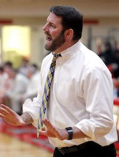

Home
The Program
About Us
The Team
Testimonials
Contact Us
Registration Form
Our Support

Greg Ney
8th Grade Junior Patriots Feeder Basketball Coach
"These coaches understand the process of becoming complete basketball players.
Their experience as players as well as being instructors for the Stevenson basketball camps makes TAO the perfect fit for your child to prepare for the next level.
The coaches at TAO have a genuine passion for the game of basketball, for the alma mater, and to improve the players in the community.
TAO is a great way to enhance the learning process as a Patriot basketball player and I certainly regard Tao Training as an extension of the Junior Patriots."
Pat Ambrose
Varsity Basketball Coach at Stevenson High School
"These 6 young men are a great example of the Stevenson community and in particular the boy’s basketball program.
All of them have been vital in the past in helping run the Stevenson basketball camps and have a vast knowledge of what it takes to get better at hoops. They have played and coached with passion, integrity, and skill."
Daniel P. Larsen
30+ Year Teacher and Coach at Stevenson High School
"I cannot think of a better idea and better people to help bridge the gap between the world we once knew, and the world we now live in. Learning basketball is a whole lot more than throwing a ball through a hoop. It is about learning resilience; industriousness; trust; and teamwork. Sounds perfect for right now.
If I was looking for someone to help me teach these values, along with having a good time playing basketball, I would want these fine young examples to help.
Wish TAO was around when I was a kid. Am I too young to join?"